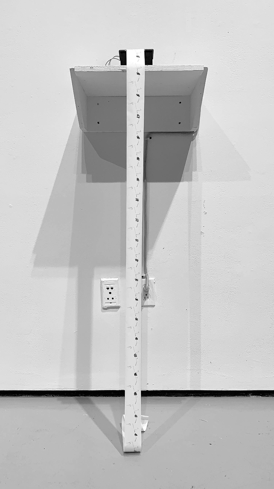
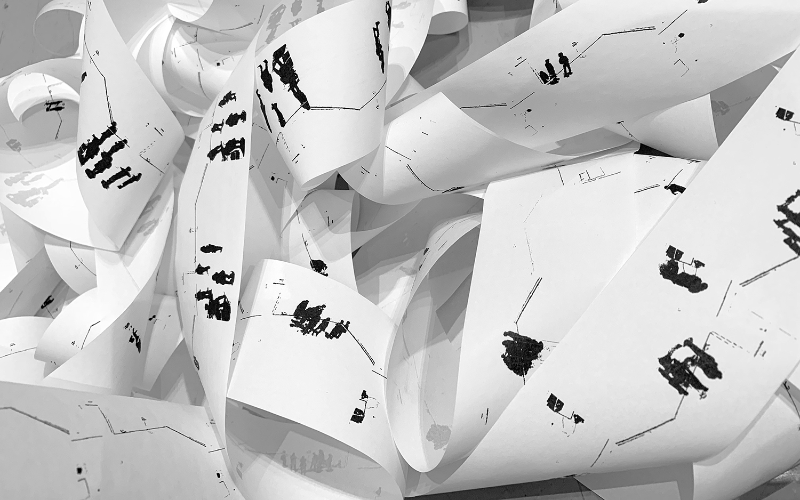

?Where
Senior Thesis, Computing and the Arts

?Where is a project about form and figure, about surveillance and accumulation. Designed and built for Halves: Senior Thesis Works in Progress, and installed in the Yale School of Art Green Gallery.
?Where utilizes two Raspberry Pi Zero Ws, one attached to a camera on a balcony overlooking the gallery space, and another connected to a thermal receipt printer located more centrally in the gallery.

Every thirty seconds, the camera takes a photo of the gallery and compares it to an initial image of the space. Then a mask is created1, isolating any new objects that have entered the space, highlighting the discrepancies between the two photos.
The mask is then uploaded to Dropbox, where the Pi attached to the printer periodically checks to see if a new image has been uploaded. When it finds a new mask, the image is downloaded and printed, creating a relatively accurate snapshot of the gallery at that moment.2,3
